m = gpglm(
y~1, family="binomial",
data = d, coords = c("x"),
cov_model = "exponential",
starting=list(
"beta"=0, "phi"=3/0.1, "sigma.sq"=1, "w"=0
),
tuning=list(
"beta"=0.5, "phi"=0.5, "sigma.sq"=0.5, "w"=0.5
),
priors=list(
"beta.Normal"=list(0,1),
"phi.unif"=c(3/0.5, 3/0.01),
"sigma.sq.ig"=c(2, 1)
),
n_batch = 100,
batch_len = 100,
verbose = FALSE
)GPs for GLMs
+ Spatial Data
Lecture 17
Dr. Colin Rundel
GPs and GLMs
Logistic Regression
A typical logistic regression problem uses the following model,
\[ \begin{aligned} y_i &\sim \text{Bern}(p_i)\\ \text{logit}(p_i) &= \boldsymbol{X}\,\boldsymbol{\beta} \\ &= \beta_0 + \beta_1 \, x_{i1} + \cdots + \beta_k \, x_{ik} \end{aligned} \]
there is no reason that the linear equation above can’t contain thing like random effects or GPs
\[ \begin{aligned} y_i &\sim \text{Bern}(p_i) \\ \text{logit}(p_i) &= \eta_i = \boldsymbol{X}\,\boldsymbol{\beta} + w(\boldsymbol{x}) \\ w(\boldsymbol{x}) &\sim N(0,\Sigma) \end{aligned} \]
A toy example
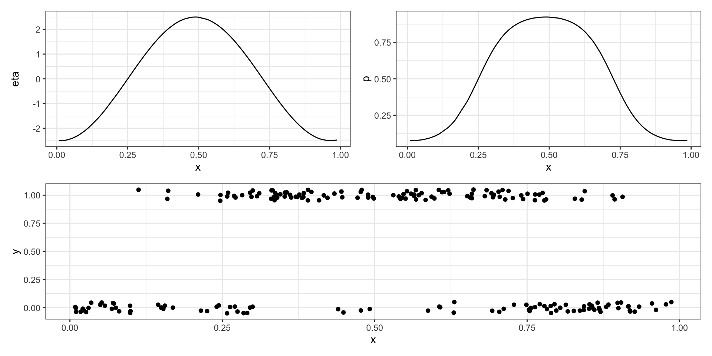Model fitting
Model diagnostics
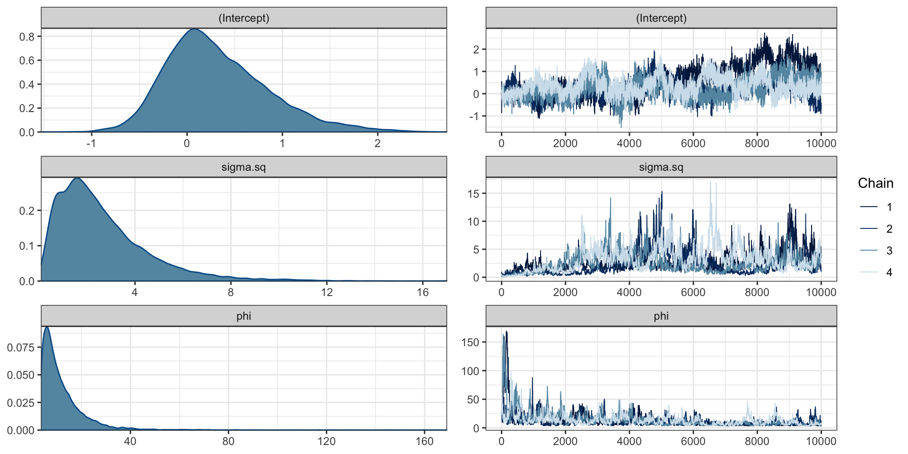Model predictions
# A draws_matrix: 200 iterations, 4 chains, and 202 variables
variable
draw w[1] w[2] w[3] w[4] w[5] w[6] w[7]
1 -1.18 -0.22201 -0.354 0.072 0.380 -0.226 -0.45
2 -0.22 -0.00092 -0.167 -0.079 0.170 0.149 -0.29
3 -0.64 0.09967 -0.345 0.357 -0.801 -0.339 -0.44
4 -0.82 1.25431 -0.542 -1.391 -0.637 -0.033 -0.30
5 0.19 -0.90628 -0.969 -0.561 -0.188 -1.444 -0.94
6 -0.58 -1.01544 0.036 -0.611 -1.297 -1.107 -0.77
7 -1.74 0.64735 0.036 -0.357 -1.268 -0.870 -0.70
8 -0.25 -0.01433 -0.460 0.312 -0.046 -0.902 -1.68
9 -0.83 -2.72657 -2.128 -1.316 -1.648 -2.682 -2.54
10 -0.51 -1.15691 -1.570 -0.998 -1.074 -1.079 -1.63
variable
draw w[8]
1 -0.042
2 -0.671
3 -0.440
4 -0.368
5 -0.346
6 -0.706
7 0.220
8 -0.666
9 -1.486
10 -1.311
# ... with 790 more draws, and 194 more variablesPredicted y
Predicted w
glm
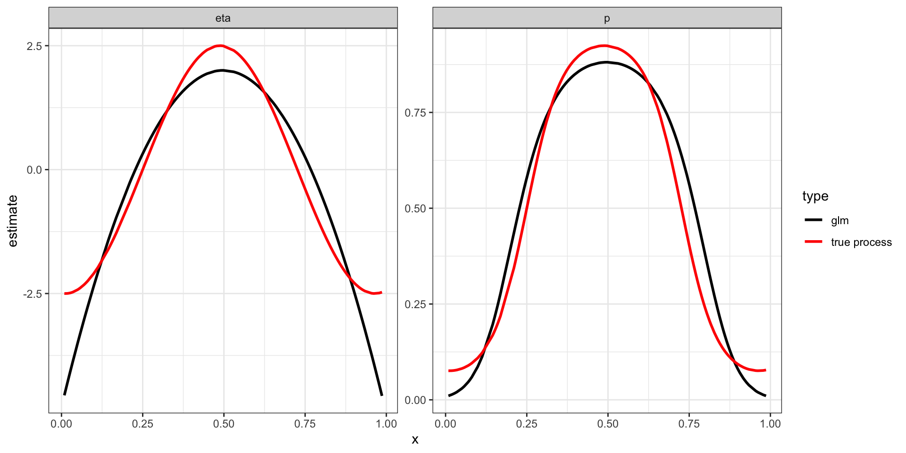Count data
Polio cases
Polio from the glarma package.
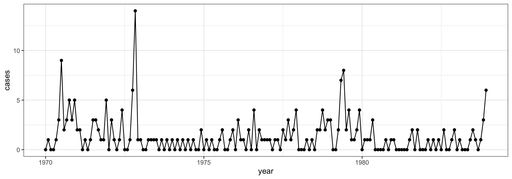This data set gives the monthly number of cases of poliomyelitis in the U.S. for the years 1970–1983 as reported by the Center for Disease Control.
Polio Model
Model: \[ \begin{aligned} y_i &\sim \text{Pois}(\lambda_i) \\ \text{log}(\lambda_i) &= \beta_0 + w(\boldsymbol{t}) \\ \\ w(\boldsymbol{t}) &\sim N(0,\Sigma) \\ \{\boldsymbol{\Sigma}\}_{ij} &= \sigma^2 \exp(-| l \, d_{ij}|) \end{aligned} \] . . .
Priors:
\[ \begin{aligned} \beta_0 &\sim N(0,1) \\ \phi &\sim \text{Unif}\left(\frac{3}{6}, \frac{3}{1/12}\right)\\ \sigma^2 &\sim \text{Inv-Gamma}(2,1) \end{aligned} \]
Model fitting
m = gpglm(
cases~1, family="poisson",
data = polio, coords = c("year"),
cov_model = "exponential",
starting=list(
"beta"=0, "phi"=3/2, "sigma.sq"=1, "w"=0
),
tuning=list(
"beta"=0.5, "phi"=0.5, "sigma.sq"=0.5, "w"=0.5
),
priors=list(
"beta.Normal"=list(0,1),
"phi.unif"=c(3/6, 3/(1/12)),
"sigma.sq.ig"=c(2, 1)
),
n_batch = 100,
batch_len = 100,
verbose = FALSE
)Model diagnostics
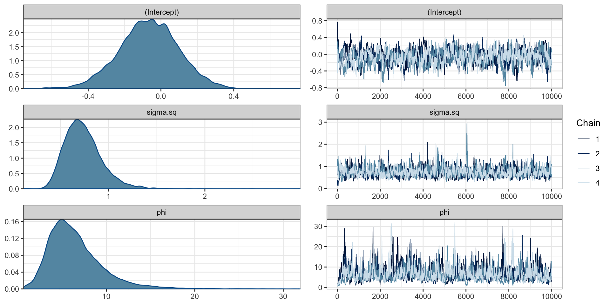Model fit
# A draws_matrix: 200 iterations, 4 chains, and 282 variables
variable
draw w[1] w[2] w[3] w[4] w[5] w[6] w[7] w[8]
1 -0.498 0.065 0.3183 0.2519 -0.52 0.32 -0.0085 -0.22
2 0.190 -0.115 -0.0028 0.0917 1.12 1.62 1.0786 1.34
3 -1.322 -0.651 -0.5380 -0.4450 0.94 1.80 1.5415 1.80
4 0.112 0.075 0.3479 0.6895 1.05 1.68 1.6113 0.79
5 -0.043 -0.088 -0.2408 -0.2396 2.15 1.79 -0.0989 1.04
6 -0.528 -0.995 -0.9240 -0.0067 1.50 2.00 0.9907 1.63
7 -1.779 -0.426 -1.2744 0.9432 0.51 0.90 1.2267 0.04
8 -0.594 -0.119 -0.9112 -0.0822 1.69 1.28 0.2578 0.88
9 0.259 0.157 0.3803 0.4777 0.30 1.23 0.3618 0.35
10 -1.880 -1.996 -0.5955 -0.5550 1.45 1.43 0.6164 0.61
# ... with 790 more draws, and 274 more variablesPredicted y
Predicted w
Spatial data in R
Packages for geospatial data in R
R has a rich package ecosystem for read/writing, manipulating, and analyzing geospatial data.
Some core packages:
sp- core classes for handling spatial data, additional utility functions - Deprecatedrgdal- R interface togdal(Geospatial Data Abstraction Library) for reading and writing spatial data - Deprecatedrgeos- R interface togeos(Geometry Engine Open Source) library for querying and manipulating spatial data. Reading and writing WKT. - Deprecatedsf- Combines the functionality ofsp,rgdal, andrgeosinto a single package based on tidy simple features.raster- classes and tools for handling spatial raster data.stars- Reading, manipulating, writing and plotting spatiotemporal arrays (rasters)
See more - Spatial task view
Installing sf
This is the hardest part of using the sf package, difficulty comes from is dependence on several external libraries (geos, gdal, and proj).
Windows - installing from source works when Rtools is installed (system requirements are downloaded from rwinlib)
MacOS - install dependencies via homebrew:
gdal2,geos,proj.Linux - Install development packages for GDAL (>= 2.0.0), GEOS (>= 3.3.0) and Proj.4 (>= 4.8.0) from your package manager of choice.
More specific details are included in the README on github.
Simple Features
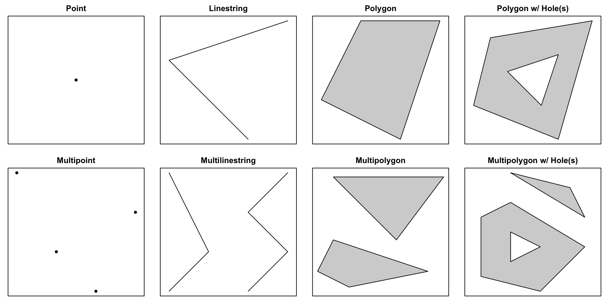Reading, writing, and converting
sfst_read()/st_write()- Shapefile, GeoJSON, KML, …read_sf()/write_sf()- Same, supports tibbles …st_as_sfc()/st_as_wkt()- sf <-> WKTst_as_sfc()/st_as_binary()- sf <-> WKBst_as_sfc()/as(x, "Spatial")- sf <-> sp
Geospatial data in
the real world
Projections
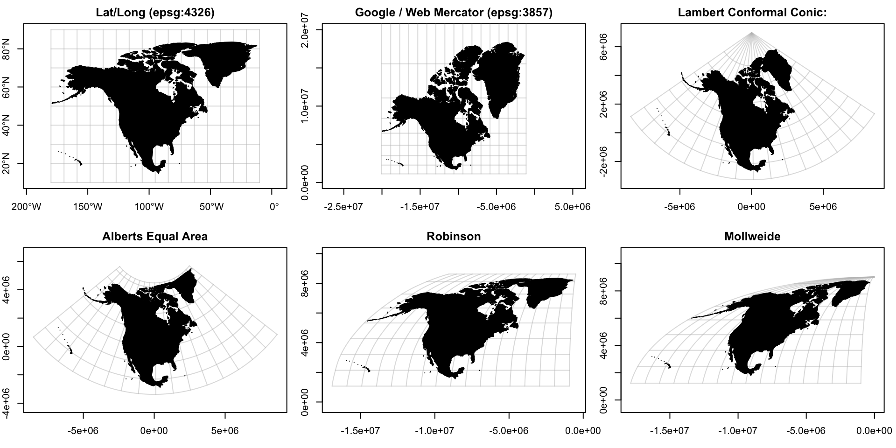Distance on a Sphere
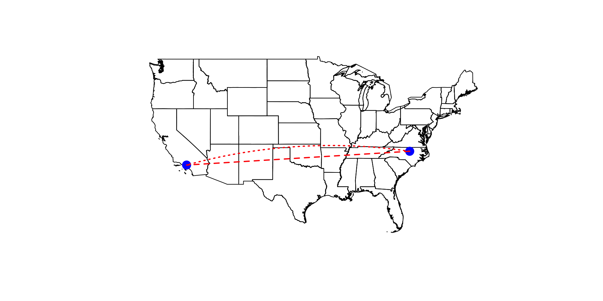Dateline
How long is the flight between the Western most and the Eastern most points in the US?
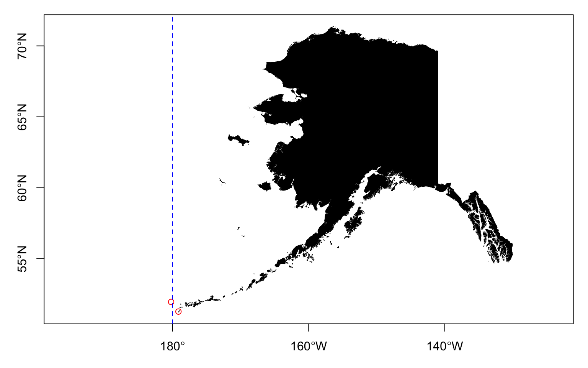
Using sf
Example data
Simple feature collection with 100 features and 8 fields
Geometry type: MULTIPOLYGON
Dimension: XY
Bounding box: xmin: -84.32186 ymin: 33.84175 xmax: -75.46003 ymax: 36.58815
Geodetic CRS: NAD83
# A tibble: 100 × 9
AREA PERIM…¹ COUNT…² STATE COUNTY FIPS STATE…³ SQUAR…⁴
<dbl> <dbl> <dbl> <chr> <chr> <chr> <chr> <dbl>
1 0.112 1.61 1994 NC Ashe … 37009 37 429.
2 0.0616 1.35 1996 NC Alleg… 37005 37 236.
3 0.140 1.77 1998 NC Surry… 37171 37 539.
4 0.0891 1.43 1999 NC Gates… 37073 37 342.
5 0.0687 4.43 2000 NC Curri… 37053 37 264.
6 0.119 1.40 2001 NC Stoke… 37169 37 456.
7 0.0626 2.11 2002 NC Camde… 37029 37 241.
8 0.115 1.46 2003 NC Warre… 37185 37 444.
9 0.143 2.40 2004 NC North… 37131 37 551.
10 0.0925 1.81 2005 NC Hertf… 37091 37 356.
# … with 90 more rows, 1 more variable:
# geometry <MULTIPOLYGON [°]>, and abbreviated variable
# names ¹PERIMETER, ²COUNTYP010, ³STATE_FIPS, ⁴SQUARE_MILSimple feature collection with 940 features and 16 fields
Geometry type: POINT
Dimension: XY
Bounding box: xmin: -176.646 ymin: 17.70156 xmax: -64.80172 ymax: 71.28545
Geodetic CRS: NAD83
# A tibble: 940 × 17
AIRPRTX…¹ FEATURE ICAO IATA AIRPT…² CITY STATE STATE…³
<dbl> <chr> <chr> <chr> <chr> <chr> <chr> <chr>
1 0 AIRPORT KGON GON GROTON… GROT… CT 09
2 3 AIRPORT K6S5 6S5 RAVALL… HAMI… MT 30
3 4 AIRPORT KMHV MHV MOJAVE… MOJA… CA 06
4 6 AIRPORT KSEE SEE GILLES… SAN … CA 06
5 7 AIRPORT KFPR FPR ST LUC… FORT… FL 12
6 8 AIRPORT KRYY RYY COBB C… ATLA… GA 13
7 10 AIRPORT KMKL MKL MC KEL… JACK… TN 47
8 11 AIRPORT KCCR CCR BUCHAN… CONC… CA 06
9 13 AIRPORT KJYO JYO LEESBU… LEES… VA 51
10 15 AIRPORT KCAD CAD WEXFOR… CADI… MI 26
# … with 930 more rows, 9 more variables: COUNTY <chr>,
# FIPS <chr>, TOT_ENP <dbl>, LATITUDE <dbl>,
# LONGITUDE <dbl>, ELEV <dbl>, ACT_DATE <chr>,
# CNTL_TWR <chr>, geometry <POINT [°]>, and abbreviated
# variable names ¹AIRPRTX010, ²AIRPT_NAME, ³STATE_FIPSSimple feature collection with 233 features and 3 fields
Geometry type: MULTILINESTRING
Dimension: XY
Bounding box: xmin: -7472582 ymin: 2911107 xmax: 2443707 ymax: 8208428
Projected CRS: NAD83 / UTM zone 15N
# A tibble: 233 × 4
ROUTE_NUM DIST_MILES DIST_KM geometry
<chr> <dbl> <dbl> <MULTILINESTRING [m]>
1 I10 2449. 3941. ((-1881200 4072307, -187992…
2 I105 20.8 33.4 ((-1910156 5339585, -191013…
3 I110 41.4 66.6 ((1054139 3388879, 1054287 …
4 I115 1.58 2.55 ((-1013796 5284243, -101313…
5 I12 85.3 137. ((680741.7 3366581, 682709.…
6 I124 1.73 2.79 ((1201467 3906285, 1201643 …
7 I126 3.56 5.72 ((1601502 3829718, 1602136 …
8 I129 3.1 4.99 ((217446 4705389, 217835.1 …
9 I135 96.3 155. ((96922.97 4313125, 96561.8…
10 I15 1436. 2311 ((-882875.7 5602902, -88299…
# … with 223 more rowssf structure
sf [100 × 9] (S3: sf/tbl_df/tbl/data.frame)
$ AREA : num [1:100] 0.1118 0.0616 0.1402 0.0891 0.0687 ...
$ PERIMETER : num [1:100] 1.61 1.35 1.77 1.43 4.43 ...
$ COUNTYP010: num [1:100] 1994 1996 1998 1999 2000 ...
$ STATE : chr [1:100] "NC" "NC" "NC" "NC" ...
$ COUNTY : chr [1:100] "Ashe County" "Alleghany County" "Surry County" "Gates County" ...
$ FIPS : chr [1:100] "37009" "37005" "37171" "37073" ...
$ STATE_FIPS: chr [1:100] "37" "37" "37" "37" ...
$ SQUARE_MIL: num [1:100] 429 236 539 342 264 ...
$ geometry :sfc_MULTIPOLYGON of length 100; first list element: List of 1
..$ :List of 1
.. ..$ : num [1:1030, 1:2] -81.7 -81.7 -81.7 -81.6 -81.6 ...
..- attr(*, "class")= chr [1:3] "XY" "MULTIPOLYGON" "sfg"
- attr(*, "sf_column")= chr "geometry"
- attr(*, "agr")= Factor w/ 3 levels "constant","aggregate",..: NA NA NA NA NA NA NA NA
..- attr(*, "names")= chr [1:8] "AREA" "PERIMETER" "COUNTYP010" "STATE" ...sf classes
Projections
Coordinate Reference System:
User input: NAD83
wkt:
GEOGCRS["NAD83",
DATUM["North American Datum 1983",
ELLIPSOID["GRS 1980",6378137,298.257222101,
LENGTHUNIT["metre",1]]],
PRIMEM["Greenwich",0,
ANGLEUNIT["degree",0.0174532925199433]],
CS[ellipsoidal,2],
AXIS["latitude",north,
ORDER[1],
ANGLEUNIT["degree",0.0174532925199433]],
AXIS["longitude",east,
ORDER[2],
ANGLEUNIT["degree",0.0174532925199433]],
ID["EPSG",4269]]Coordinate Reference System:
User input: NAD83 / UTM zone 15N
wkt:
PROJCRS["NAD83 / UTM zone 15N",
BASEGEOGCRS["NAD83",
DATUM["North American Datum 1983",
ELLIPSOID["GRS 1980",6378137,298.257222101,
LENGTHUNIT["metre",1]]],
PRIMEM["Greenwich",0,
ANGLEUNIT["degree",0.0174532925199433]],
ID["EPSG",4269]],
CONVERSION["UTM zone 15N",
METHOD["Transverse Mercator",
ID["EPSG",9807]],
PARAMETER["Latitude of natural origin",0,
ANGLEUNIT["Degree",0.0174532925199433],
ID["EPSG",8801]],
PARAMETER["Longitude of natural origin",-93,
ANGLEUNIT["Degree",0.0174532925199433],
ID["EPSG",8802]],
PARAMETER["Scale factor at natural origin",0.9996,
SCALEUNIT["unity",1],
ID["EPSG",8805]],
PARAMETER["False easting",500000,
LENGTHUNIT["metre",1],
ID["EPSG",8806]],
PARAMETER["False northing",0,
LENGTHUNIT["metre",1],
ID["EPSG",8807]]],
CS[Cartesian,2],
AXIS["(E)",east,
ORDER[1],
LENGTHUNIT["metre",1]],
AXIS["(N)",north,
ORDER[2],
LENGTHUNIT["metre",1]],
ID["EPSG",26915]]UTM Zones
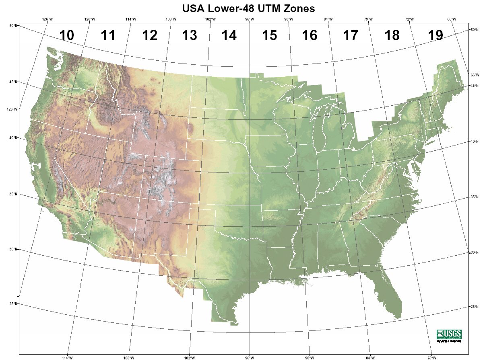Lat/Long
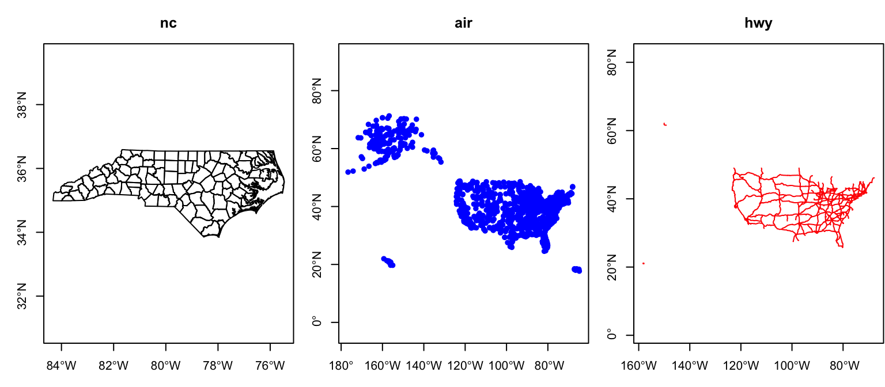UTM
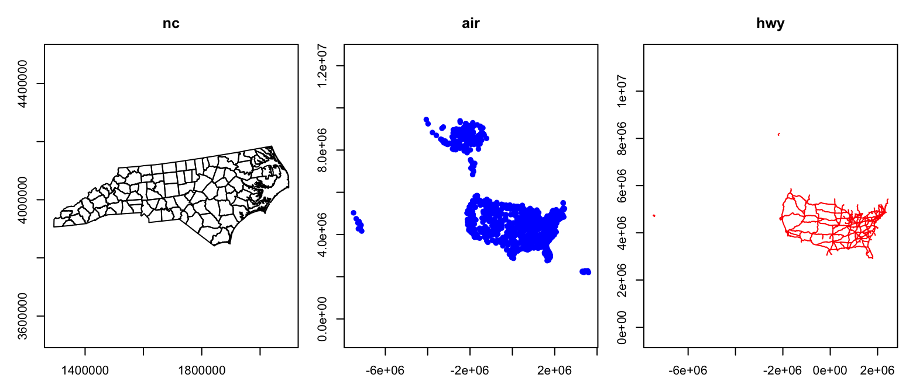Comparison

Sta 344 - Fall 2022